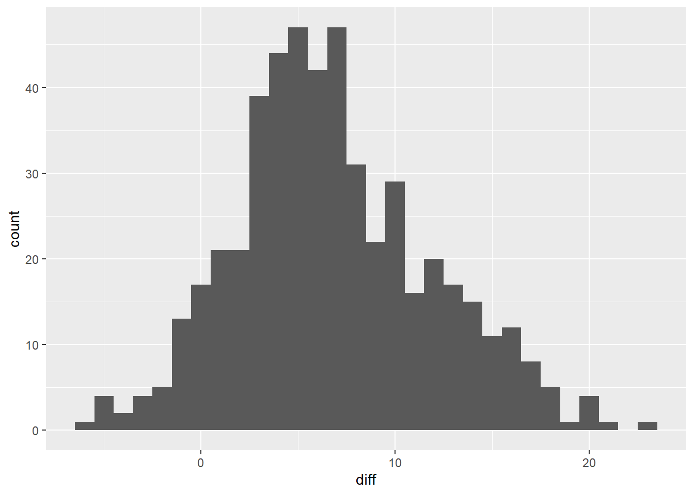
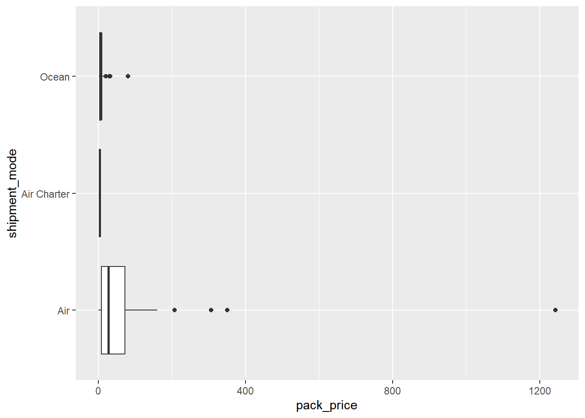
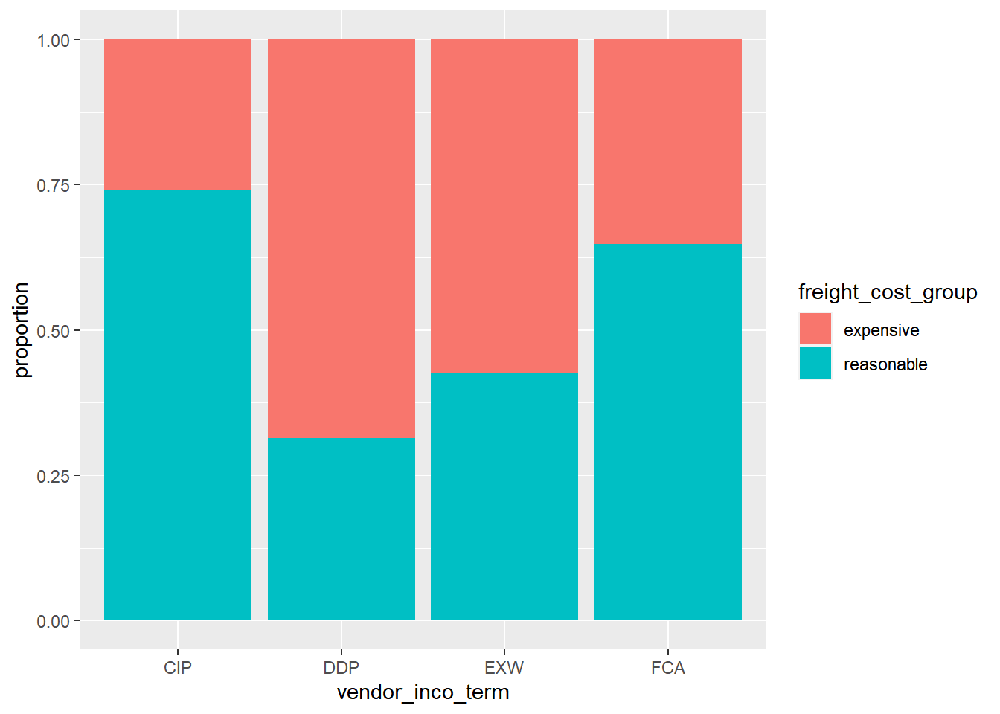

Chapter 17 Hypothesis Testing
17.1 Introduction to Hypothesis Testing
17.1.1 Hypothesis tests & z-scores
A/B testing
Involves splitting participants into control and treatment groups.
Let’s you compare scenarios to see which best achieves some goal.
z-scores
\(standardized\ value = value − mean / standard\ deviation\)
\(𝑧 = sample\ stat − hypoth. param. value / standard\ error\)
Standard normal (𝑧) distribution: the normal distribution with mean zero, standard deviation 1.
17.1.1.1 Calculating the sample mean
The late_shipments dataset contains supply chain data on the delivery of medical supplies. Each row represents one delivery of a part.
The late columns denotes whether or not the part was delivered late.
"Yes"means that the part was delivered late,"No"means the part was delivered on time.
Let’s calculating a point estimate (sample statistic), namely the proportion of late shipments.
library(tidyverse)
library(fst)
late_shipments <- read_fst("data/late_shipments.fst")
glimpse(late_shipments)## Rows: 1,000
## Columns: 26
## $ id <dbl> 73003, 41222, 52354, 28471, 16901, 27238, 910…
## $ country <chr> "Vietnam", "Kenya", "Zambia", "Nigeria", "Vie…
## $ managed_by <chr> "PMO - US", "PMO - US", "PMO - US", "PMO - US…
## $ fulfill_via <chr> "Direct Drop", "Direct Drop", "Direct Drop", …
## $ vendor_inco_term <chr> "EXW", "EXW", "EXW", "EXW", "EXW", "EXW", "EX…
## $ shipment_mode <chr> "Air", "Air", "Air", "Air", "Air", "Air", "Ai…
## $ late_delivery <dbl> 0, 0, 0, 1, 0, 0, 0, 0, 0, 0, 0, 0, 0, 0, 0, …
## $ late <chr> "No", "No", "No", "Yes", "No", "No", "No", "N…
## $ product_group <chr> "ARV", "HRDT", "HRDT", "HRDT", "ARV", "HRDT",…
## $ sub_classification <chr> "Adult", "HIV test", "HIV test", "HIV test", …
## $ vendor <chr> "HETERO LABS LIMITED", "Orgenics, Ltd", "Orge…
## $ item_description <chr> "Efavirenz/Lamivudine/Tenofovir Disoproxil Fu…
## $ molecule_test_type <chr> "Efavirenz/Lamivudine/Tenofovir Disoproxil Fu…
## $ brand <chr> "Generic", "Determine", "Determine", "Determi…
## $ dosage <chr> "600/300/300mg", "N/A", "N/A", "N/A", "300mg"…
## $ dosage_form <chr> "Tablet - FDC", "Test kit", "Test kit", "Test…
## $ unit_of_measure_per_pack <dbl> 30, 100, 100, 100, 60, 20, 100, 30, 30, 25, 1…
## $ line_item_quantity <dbl> 19200, 6100, 1364, 2835, 112, 53, 1500, 6180,…
## $ line_item_value <dbl> 201600, 542900, 109120, 252315, 1618, 1696, 1…
## $ pack_price <dbl> 10.50, 89.00, 80.00, 89.00, 14.45, 32.00, 80.…
## $ unit_price <dbl> 0.35, 0.89, 0.80, 0.89, 0.24, 1.60, 0.80, 0.5…
## $ manufacturing_site <chr> "Hetero Unit III Hyderabad IN", "Alere Medica…
## $ first_line_designation <chr> "Yes", "Yes", "Yes", "Yes", "Yes", "Yes", "Ye…
## $ weight_kilograms <dbl> 2719, 3497, 553, 1352, 1701, 18, 445, 2130, 2…
## $ freight_cost_usd <dbl> 4085, 40917, 7845, 31284, 4289, 569, 7120, 17…
## $ line_item_insurance_usd <dbl> 207.24, 895.78, 112.18, 353.75, 2.67, 2.80, 2…# Calculate the proportion of late shipments
late_prop_samp <- late_shipments %>%
summarise(sample_mean = mean(late == "Yes")) %>%
pull(sample_mean)
# See the results
late_prop_samp## [1] 0.067The proportion of late shipments is 0.067.
17.1.1.2 Calculating z-score
Since variables have arbitrary ranges and units, we need to standardize them.
One standardized value of interest in a hypothesis test is called a z-score. To calculate it, we need three numbers:
the sample statistic (point estimate) =
late_prop_sampthe hypothesized statistic
the standard error of the statistic (which we estimate from the bootstrap distribution).
# A bootstrap distribution of the proportion of late shipments
late_shipments_boot_distn <- replicate(
n = 5000,
expr = {
late_shipments %>%
slice_sample(prop = 1, replace = TRUE) %>%
summarise(late_prop = mean(late == "Yes")) %>%
pull(late_prop)
}
) %>%
tibble(late_prop = .)
late_shipments_boot_distn## # A tibble: 5,000 × 1
## late_prop
## <dbl>
## 1 0.072
## 2 0.072
## 3 0.062
## 4 0.075
## 5 0.046
## 6 0.068
## 7 0.062
## 8 0.058
## 9 0.071
## 10 0.061
## # ℹ 4,990 more rows# Hypothesize that the proportion is 6%
late_prop_hyp <- 0.06
# Calculate the standard error = the standard deviation of the bootstrap distribution
std_error <- late_shipments_boot_distn %>%
summarise(sd(late_prop)) %>%
pull()
# Find z-score of late_prop_samp
z_score <- (late_prop_samp - late_prop_hyp) / std_error
# See the results
z_score## [1] 0.88The z-score is a standardized measure of the difference between the sample statistic and the hypothesized statistic.
17.1.2 p-values
Hypothesis testing
A hypothesis is a statement about an unknown population parameter.
A hypothesis test is a test of two competing hypotheses.
null hypothesis (\(H_0\)) is the existing “champion” idea.
alternative hypothesis (\(H_A\)) is the new “challenger” idea of the researcher.
Initially the null hypothesis, \(H_0\) , is assumed to be true.
The test ends in either “reject \(H_0\)” or “fail to reject \(H_0\)”.
If the evidence from the sample is “significant” that \(H_A\) is true, choose that hypothesis, else choose \(H_0\).
One-tailed and two-tailed tests
| Test | Tails | pnorm() = normal CDF |
|---|---|---|
| alternative different from null | two-tailed | |
| alternative greater than null | right-tailed | lower.tail = FALSE |
| alternative less than null | left-tailed | lower.tail = TRUE |
p-values
The “p” in p-value stands for probability.
The smaller the p-value, the stronger the evidence against \(H_0\).
17.1.2.1 Calculating p-values
The p-value is calculated by transforming the z-score with the standard normal cumulative distribution function.
# standard normal cumulative distribution
args(pnorm)## function (q, mean = 0, sd = 1, lower.tail = TRUE, log.p = FALSE)
## NULLLet’s return to the late shipments dataset and the proportion of late shipments.
The null hypothesis (\(H_0\)): the proportion of late shipments is six percent.
The alternative hypothesis (\(H_A\)): the proportion of late shipments is greater than six percent.
# Calculate the z-score of late_prop_samp
z_score <- (late_prop_samp - late_prop_hyp) / std_error
# Calculate the p-value, assuming a right-tailed test
p_value <- pnorm(z_score, lower.tail = FALSE)
# See the result
p_value## [1] 0.18917.1.3 Statistical significance
Significance level
The significance level of a hypothesis test (α) is the threshold point for “beyond a reasonable doubt”.
Common values of α are
0.1,0.05, and0.01.If \(p ≤ α\), reject \(H_0\), else fail to reject \(H_0\).
Confidence intervals
For a significance level of 0.05, it’s common to choose a confidence interval of 1 - 0.05 = 0.95.
Types of errors
| actual \(H_0\) | actual \(H_A\) | |
|---|---|---|
| chosen \(H_0\) | correct 1 - 𝛼 |
false negative Type II errors = 𝛽 |
| chosen \(H_A\) | false positive Type I errors = 𝛼 |
correct 1 - 𝛽 |
17.1.3.1 Calculating confidence intervals
For example, the hypothesized proportion of late shipments was 6%.
Even if evidence suggests the null hypothesis that the proportion of late shipments is equal to this, for any new sample of shipments, the proportion is likely to be a little different.
Consequently, it’s a good idea to state a confidence interval. That is, you say “we are 95% ‘confident’ the proportion of late shipments is between A and B” (for some value of A and B).
# Calculate 95% confidence interval using quantile method
conf_int_quantile <- late_shipments_boot_distn %>%
summarise(
lower = quantile(late_prop, 0.025),
upper = quantile(late_prop, 0.975)
)
# See the result
conf_int_quantile## # A tibble: 1 × 2
## lower upper
## <dbl> <dbl>
## 1 0.052 0.083If the hypothesized population parameter is within the confidence interval, you should fail to reject the null hypothesis. Due to the large p-value, the results are similar.

17.2 Two-Sample & ANOVA Tests
17.2.1 Performing t-tests
17.2.1.1 Two sample mean test statistic
Test statistics
Sample mean estimates the population mean.
\(\overline{x}\) denotes a sample mean.

While trying to determine why some shipments are late, you may wonder if the weight of the shipments that were late is different from the weight of the shipments that were on time. The late_shipments dataset has been split into a “yes” group, where late == "Yes" and a “no” group where late == "No". The weight of the shipment is given in the weight_kilograms variable.
For convenience, the sample means for the two groups are available as xbar_no and xbar_yes. The sample standard deviations are s_no and s_yes. The sample sizes are n_no and n_yes.
xbar_no <- 2082.171
xbar_yes <- 2377.821
s_no <- 6094.609
s_yes <- 2242.502
n_no <- 933
n_yes <- 67
# Calculate the numerator of the test statistic
numerator <- xbar_no - xbar_yes
# Calculate the denominator of the test statistic
denominator <- sqrt((s_yes^2 / n_yes) + (s_no^2 / n_no))
# Calculate the test statistic
t_stat <- numerator / denominator
# See the result
t_stat## [1] -0.872When testing for differences between means, the test statistic is called ‘t’ rather than ‘z’.
17.2.2 Calculating p-values from t-statistics
t-distributions
The test statistic, t, follows a t-distribution.
t-distributions have a parameter named degrees of freedom (df).
t-distributions look like normal distributions, with fatter tails.

Degrees of freedom
As you increase the degrees of freedom, the t-distribution gets closer to the normal distribution.

A normal distribution is a t-distribution with infinite degrees of freedom.
Degrees of freedom are the maximum number of logically independent values in the data sample.
\(df = (n_{group1} - 1) + (n_{group2} − 1)\)
17.2.2.1 From t to p
When the standard error is estimated from the sample standard deviation and sample size, the test statistic is transformed into a p-value using the t-distribution.
Previously, you calculated the test statistic for the two-sample problem of whether the mean weight of shipments is lower for shipments that weren’t late (late == "No") compared to shipments that were late (late == "Yes"). In order to make decisions about it, you need to transform the test statistic with a cumulative distribution function to get a p-value.
t-distribution CDF: pt(t_stat, df, lower.tail)
\(H_0\): The mean weight of shipments that weren’t late is the same as the mean weight of shipments that were late.
\(H_A\): The mean weight of shipments that weren’t late is less than the mean weight of shipments that were late.
# Calculate the degrees of freedom
degrees_of_freedom <- n_no - 1 + n_yes - 1
# Calculate the p-value from the test stat
p_value <- pt(t_stat, degrees_of_freedom, lower.tail = TRUE)
# See the result
p_value## [1] 0.192Fall to reject \(H_0\)
17.2.3 Paired t-tests
If you have repeated observations of something, then those observations form pairs.
17.2.3.1 Visualizing the difference
Here, you’ll look at the proportion of county-level votes for the Democratic candidate in 2012 and 2016, dem_votes_potus_12_16. Since the counties are the same in both years, these samples are paired.
dem_votes_potus_12_16 <- read_fst("data/dem_county_pres_joined.fst") %>%
select(state, county, dem_percent_12, dem_percent_16)
glimpse(dem_votes_potus_12_16)## Rows: 500
## Columns: 4
## $ state <chr> "Alabama", "Alabama", "Alabama", "Alabama", "Alabama", …
## $ county <chr> "Bullock", "Chilton", "Clay", "Cullman", "Escambia", "F…
## $ dem_percent_12 <dbl> 76.3, 19.5, 26.7, 14.7, 36.9, 22.9, 29.2, 62.6, 23.0, 3…
## $ dem_percent_16 <dbl> 74.9, 15.8, 18.7, 10.0, 31.0, 16.5, 18.2, 59.4, 14.9, 2…Before you start running hypothesis tests, it’s a great idea to perform some exploratory data analysis.
# Calculate the differences from 2012 to 2016
sample_dem_data <- dem_votes_potus_12_16 %>%
mutate(diff = dem_percent_12 - dem_percent_16)
# See the result
sample_dem_data## state county dem_percent_12 dem_percent_16 diff
## 1 Alabama Bullock 76.31 74.95 1.3590
## 2 Alabama Chilton 19.45 15.85 3.6063
## 3 Alabama Clay 26.67 18.67 7.9992
## 4 Alabama Cullman 14.66 10.03 4.6335
## 5 Alabama Escambia 36.92 31.02 5.8952
## 6 Alabama Fayette 22.87 16.51 6.3558
## 7 Alabama Franklin 29.20 18.25 10.9541
## 8 Alabama Hale 62.61 59.39 3.2150
## 9 Alabama Lamar 22.97 14.87 8.0973
## 10 Alabama Lauderdale 33.88 25.18 8.7041
## 11 Alabama Monroe 45.89 42.18 3.7139
## 12 Alabama Pike 42.78 38.40 4.3841
## 13 Alabama Shelby 21.68 22.69 -1.0173
## 14 Alabama Walker 22.99 15.26 7.7315
## 15 Arizona Graham 30.44 16.26 14.1866
## 16 Arkansas Baxter 26.74 21.09 5.6521
## 17 Arkansas Benton 28.56 28.92 -0.3634
## 18 Arkansas Bradley 39.68 36.05 3.6243
## 19 Arkansas Craighead 33.21 29.62 3.5846
## 20 Arkansas Dallas 43.35 42.04 1.3102
## 21 Arkansas Desha 55.27 52.34 2.9342
## 22 Arkansas Faulkner 32.85 30.78 2.0730
## 23 Arkansas Howard 32.97 28.90 4.0627
## 24 Arkansas Logan 27.40 21.65 5.7529
## 25 Arkansas Marion 28.89 20.18 8.7122
## 26 Arkansas Newton 27.12 18.63 8.4986
## 27 California Alameda 78.85 78.69 0.1634
## 28 California Calaveras 39.80 34.34 5.4601
## 29 California Humboldt 59.96 56.04 3.9190
## 30 California Mariposa 38.87 35.17 3.6971
## 31 California Merced 53.18 52.72 0.4692
## 32 California Modoc 27.87 23.15 4.7205
## 33 California Mono 52.75 52.56 0.1917
## 34 California Napa 62.97 63.87 -0.9060
## 35 California Placer 39.00 40.20 -1.2028
## 36 California Riverside 49.71 49.73 -0.0194
## 37 California Santa Barbara 57.63 60.61 -2.9708
## 38 California Santa Clara 70.10 72.71 -2.6107
## 39 California Stanislaus 50.03 47.43 2.5965
## 40 California Tulare 41.30 42.36 -1.0626
## 41 Colorado Alamosa 56.75 45.96 10.7959
## 42 Colorado Arapahoe 53.90 52.76 1.1448
## 43 Colorado Cheyenne 15.74 11.98 3.7583
## 44 Colorado Elbert 25.41 19.61 5.7981
## 45 Colorado Las Animas 50.20 39.01 11.1933
## 46 Colorado Moffat 21.56 13.39 8.1683
## 47 Colorado Morgan 36.30 26.35 9.9534
## 48 Colorado Park 41.23 32.84 8.3937
## 49 Colorado Phillips 25.96 18.70 7.2639
## 50 Colorado Rio Blanco 16.86 12.64 4.2219
## 51 Connecticut Hartford 62.37 59.09 3.2829
## 52 Connecticut New Haven 60.65 54.25 6.4032
## 53 Florida Broward 67.20 66.51 0.6908
## 54 Florida Calhoun 27.05 20.41 6.6403
## 55 Florida Desoto 42.31 34.95 7.3602
## 56 Florida Flagler 45.87 38.30 7.5641
## 57 Florida Franklin 33.70 28.99 4.7106
## 58 Florida Hardee 34.09 28.34 5.7455
## 59 Florida Highlands 38.05 32.69 5.3505
## 60 Florida Lake 40.98 36.86 4.1144
## 61 Florida Madison 47.92 41.46 6.4594
## 62 Florida Orange 58.68 60.39 -1.7085
## 63 Florida St. Johns 30.65 31.57 -0.9165
## 64 Florida Walton 23.41 20.44 2.9702
## 65 Georgia Bacon 20.12 15.12 4.9977
## 66 Georgia Clinch 34.47 27.94 6.5230
## 67 Georgia Columbia 27.92 29.17 -1.2528
## 68 Georgia Coweta 27.30 26.86 0.4454
## 69 Georgia Dawson 12.11 12.31 -0.1933
## 70 Georgia Dougherty 69.35 68.39 0.9584
## 71 Georgia Fannin 20.25 16.28 3.9655
## 72 Georgia Franklin 19.31 14.62 4.6919
## 73 Georgia Houston 39.10 37.54 1.5647
## 74 Georgia Jenkins 43.89 36.75 7.1464
## 75 Georgia Lumpkin 18.84 17.87 0.9774
## 76 Georgia McDuffie 42.16 39.91 2.2486
## 77 Georgia Mitchell 49.32 44.33 4.9898
## 78 Georgia Paulding 27.57 27.78 -0.2076
## 79 Georgia Pierce 16.42 12.35 4.0671
## 80 Georgia Talbot 64.88 61.68 3.2052
## 81 Georgia Telfair 41.63 34.59 7.0392
## 82 Georgia Toombs 29.39 25.59 3.8024
## 83 Georgia Twiggs 54.02 48.56 5.4631
## 84 Georgia Ware 32.67 28.23 4.4323
## 85 Georgia Webster 49.03 42.38 6.6477
## 86 Georgia Wheeler 35.74 30.73 5.0081
## 87 Hawaii Honolulu 68.86 61.48 7.3869
## 88 Hawaii Maui 74.10 64.45 9.6475
## 89 Idaho Bingham 21.71 17.59 4.1242
## 90 Idaho Bonneville 22.92 20.19 2.7227
## 91 Idaho Camas 27.51 18.64 8.8646
## 92 Idaho Canyon 30.06 23.20 6.8633
## 93 Idaho Custer 22.53 17.69 4.8455
## 94 Idaho Franklin 5.80 7.00 -1.1977
## 95 Idaho Fremont 13.96 11.39 2.5696
## 96 Idaho Gooding 25.15 17.92 7.2309
## 97 Idaho Lemhi 23.36 17.90 5.4622
## 98 Illinois DeKalb 51.61 46.94 4.6682
## 99 Illinois Franklin 40.49 25.26 15.2303
## 100 Illinois Grundy 44.49 34.71 9.7803
## 101 Illinois Kankakee 47.45 40.10 7.3486
## 102 Illinois McHenry 44.68 42.89 1.7821
## 103 Illinois Marshall 41.97 29.90 12.0694
## 104 Illinois Menard 34.14 27.89 6.2513
## 105 Illinois Moultrie 35.40 23.57 11.8255
## 106 Illinois Ogle 40.72 33.27 7.4415
## 107 Illinois Randolph 40.02 24.23 15.7867
## 108 Illinois Rock Island 60.23 50.47 9.7564
## 109 Illinois Wayne 19.71 12.69 7.0274
## 110 Illinois Whiteside 57.82 43.14 14.6836
## 111 Illinois Woodford 29.52 25.63 3.8878
## 112 Indiana Clark 44.13 36.77 7.3607
## 113 Indiana Hamilton 32.00 37.12 -5.1222
## 114 Indiana Huntington 29.15 21.85 7.2994
## 115 Indiana LaGrange 31.11 21.74 9.3641
## 116 Indiana Newton 39.12 24.23 14.8950
## 117 Indiana Ohio 35.26 23.49 11.7756
## 118 Indiana Putnam 32.59 22.81 9.7843
## 119 Indiana Randolph 36.99 23.39 13.6021
## 120 Indiana Shelby 31.97 23.60 8.3726
## 121 Indiana Starke 43.51 26.98 16.5334
## 122 Indiana Vermillion 45.27 29.99 15.2768
## 123 Iowa Adair 44.79 29.73 15.0651
## 124 Iowa Appanoose 47.25 29.56 17.6906
## 125 Iowa Benton 48.93 33.79 15.1431
## 126 Iowa Butler 44.12 28.71 15.4117
## 127 Iowa Chickasaw 54.81 35.21 19.5982
## 128 Iowa Clinton 60.56 43.76 16.8002
## 129 Iowa Crawford 45.41 28.71 16.6993
## 130 Iowa Guthrie 43.63 30.12 13.5094
## 131 Iowa Harrison 42.83 28.55 14.2833
## 132 Iowa Howard 59.59 36.78 22.8066
## 133 Iowa Iowa 46.74 34.64 12.1042
## 134 Iowa Jackson 57.67 37.22 20.4580
## 135 Iowa Lee 56.65 38.48 18.1743
## 136 Iowa Muscatine 57.00 43.06 13.9412
## 137 Iowa Page 36.91 25.65 11.2590
## 138 Iowa Pocahontas 37.77 24.92 12.8569
## 139 Iowa Story 55.55 50.74 4.8093
## 140 Kansas Anderson 28.48 20.06 8.4169
## 141 Kansas Atchison 38.46 30.25 8.2117
## 142 Kansas Brown 26.95 21.38 5.5646
## 143 Kansas Clay 22.63 17.72 4.9036
## 144 Kansas Decatur 17.36 12.26 5.1040
## 145 Kansas Edwards 21.52 16.07 5.4435
## 146 Kansas Ellis 26.10 22.95 3.1456
## 147 Kansas Ford 31.09 27.84 3.2490
## 148 Kansas Franklin 33.61 26.37 7.2375
## 149 Kansas Hamilton 18.59 13.81 4.7733
## 150 Kansas Lincoln 19.49 14.69 4.8017
## 151 Kansas Miami 31.72 26.57 5.1501
## 152 Kansas Neosho 31.64 23.77 7.8632
## 153 Kansas Phillips 14.89 11.26 3.6315
## 154 Kansas Rawlins 13.16 11.07 2.0845
## 155 Kansas Reno 33.11 28.24 4.8650
## 156 Kansas Stanton 18.84 18.05 0.7872
## 157 Kansas Wyandotte 67.61 61.80 5.8075
## 158 Kentucky Anderson 32.12 23.06 9.0613
## 159 Kentucky Barren 32.59 23.12 9.4698
## 160 Kentucky Bell 23.45 17.70 5.7559
## 161 Kentucky Boyle 36.14 33.07 3.0670
## 162 Kentucky Bracken 35.49 19.99 15.5002
## 163 Kentucky Caldwell 31.60 21.09 10.5162
## 164 Kentucky Cumberland 20.99 14.97 6.0174
## 165 Kentucky Fayette 49.32 51.19 -1.8665
## 166 Kentucky Fleming 33.05 21.53 11.5173
## 167 Kentucky Greenup 39.73 25.47 14.2634
## 168 Kentucky Knott 24.94 21.60 3.3396
## 169 Kentucky Madison 34.55 31.56 2.9912
## 170 Kentucky Mercer 29.84 22.63 7.2157
## 171 Kentucky Muhlenberg 37.45 25.05 12.3983
## 172 Kentucky Oldham 30.92 31.25 -0.3348
## 173 Kentucky Powell 36.15 25.66 10.4920
## 174 Kentucky Rowan 44.85 37.24 7.6132
## 175 Kentucky Shelby 35.55 30.50 5.0506
## 176 Kentucky Todd 29.74 21.80 7.9335
## 177 Kentucky Trimble 38.24 23.14 15.1007
## 178 Louisiana Bossier 26.68 25.36 1.3202
## 179 Louisiana Caldwell 21.54 16.79 4.7491
## 180 Louisiana East Baton Rouge 51.80 52.33 -0.5304
## 181 Louisiana Franklin 31.29 27.35 3.9354
## 182 Louisiana Sabine 21.82 17.40 4.4237
## 183 Louisiana St. Martin 37.05 32.10 4.9454
## 184 Maine Kennebec 55.23 44.26 10.9703
## 185 Maine Knox 59.92 53.76 6.1656
## 186 Maine Lincoln 54.51 47.63 6.8858
## 187 Maine Sagadahoc 56.85 49.33 7.5143
## 188 Maryland Garrett 23.74 18.32 5.4227
## 189 Maryland Montgomery 70.92 74.72 -3.8025
## 190 Maryland Worcester 40.17 34.50 5.6720
## 191 Massachusetts Barnstable 53.20 54.11 -0.9043
## 192 Massachusetts Bristol 59.20 52.03 7.1626
## 193 Massachusetts Essex 57.40 58.52 -1.1194
## 194 Massachusetts Franklin 71.70 64.12 7.5816
## 195 Michigan Arenac 46.79 30.98 15.8154
## 196 Michigan Calhoun 50.18 41.01 9.1653
## 197 Michigan Kalamazoo 56.06 53.17 2.8920
## 198 Michigan Macomb 51.48 42.05 9.4290
## 199 Michigan Mecosta 44.43 33.94 10.4922
## 200 Michigan Midland 41.79 36.78 5.0094
## 201 Michigan Missaukee 32.36 21.39 10.9723
## 202 Michigan Newaygo 40.64 27.44 13.1988
## 203 Michigan Ottawa 32.30 31.51 0.7919
## 204 Michigan St. Joseph 43.32 31.68 11.6438
## 205 Michigan Schoolcraft 46.07 32.96 13.1159
## 206 Michigan Van Buren 49.61 39.84 9.7637
## 207 Michigan Washtenaw 67.31 68.13 -0.8189
## 208 Minnesota Dakota 50.37 47.74 2.6287
## 209 Minnesota Douglas 41.30 28.58 12.7133
## 210 Minnesota Kanabec 44.09 28.46 15.6280
## 211 Minnesota Lake 59.28 47.19 12.0955
## 212 Minnesota Lyon 44.12 31.31 12.8013
## 213 Minnesota Nobles 44.52 31.66 12.8575
## 214 Minnesota Norman 53.94 38.76 15.1834
## 215 Minnesota Pennington 46.40 31.97 14.4285
## 216 Minnesota Pipestone 37.13 23.44 13.6886
## 217 Minnesota Pope 47.73 33.33 14.3985
## 218 Minnesota Ramsey 66.33 65.07 1.2569
## 219 Minnesota Renville 44.02 27.83 16.1875
## 220 Minnesota Roseau 37.70 23.78 13.9214
## 221 Minnesota Sherburne 37.84 27.53 10.3043
## 222 Minnesota Waseca 44.83 29.40 15.4341
## 223 Mississippi Bolivar 68.59 65.44 3.1527
## 224 Mississippi Calhoun 36.59 29.86 6.7250
## 225 Mississippi Claiborne 88.22 86.80 1.4225
## 226 Mississippi Copiah 54.87 51.93 2.9422
## 227 Mississippi Covington 41.48 37.18 4.3040
## 228 Mississippi Grenada 46.65 42.08 4.5707
## 229 Mississippi Jefferson Davis 62.16 59.64 2.5209
## 230 Mississippi Leflore 71.39 69.90 1.4915
## 231 Mississippi Lowndes 49.30 46.21 3.0836
## 232 Mississippi Pearl River 19.65 16.47 3.1760
## 233 Mississippi Tate 39.76 33.77 5.9968
## 234 Mississippi Tunica 79.30 74.77 4.5330
## 235 Mississippi Yalobusha 47.69 42.49 5.1984
## 236 Missouri Adair 41.67 34.23 7.4385
## 237 Missouri Barton 21.41 13.39 8.0201
## 238 Missouri Chariton 35.04 22.37 12.6698
## 239 Missouri Clark 43.35 22.52 20.8294
## 240 Missouri Henry 35.62 23.89 11.7317
## 241 Missouri Holt 23.85 14.73 9.1182
## 242 Missouri Howell 26.89 16.51 10.3820
## 243 Missouri Lafayette 35.80 25.53 10.2734
## 244 Missouri Lincoln 34.14 22.33 11.8087
## 245 Missouri Madison 32.21 18.89 13.3235
## 246 Missouri Miller 24.06 15.33 8.7291
## 247 Missouri Platte 42.09 41.03 1.0658
## 248 Missouri Putnam 25.42 15.05 10.3754
## 249 Missouri St. Clair 31.56 20.22 11.3448
## 250 Missouri St. Louis County 56.20 55.69 0.5104
## 251 Missouri Saline 41.61 30.07 11.5384
## 252 Missouri Shelby 29.89 18.62 11.2711
## 253 Missouri Webster 28.58 18.98 9.6010
## 254 Missouri St. Louis City 82.71 79.45 3.2590
## 255 Montana Fergus 27.01 20.58 6.4315
## 256 Montana Flathead 31.95 28.54 3.4097
## 257 Montana Glacier 65.68 61.50 4.1808
## 258 Montana McCone 22.46 14.53 7.9289
## 259 Montana Meagher 27.67 19.75 7.9205
## 260 Montana Missoula 57.39 53.28 4.1132
## 261 Montana Powell 31.99 19.72 12.2676
## 262 Montana Rosebud 40.36 28.58 11.7795
## 263 Montana Wheatland 27.42 18.92 8.4976
## 264 Nebraska Antelope 17.67 11.67 5.9938
## 265 Nebraska Banner 13.38 4.73 8.6556
## 266 Nebraska Blaine 9.57 9.46 0.1072
## 267 Nebraska Buffalo 27.58 22.54 5.0368
## 268 Nebraska Burt 38.25 26.14 12.1136
## 269 Nebraska Cass 35.85 26.94 8.9150
## 270 Nebraska Frontier 20.77 12.12 8.6428
## 271 Nebraska Hamilton 23.53 17.55 5.9810
## 272 Nebraska Hooker 14.94 9.59 5.3444
## 273 Nebraska Keya Paha 16.53 8.35 8.1782
## 274 Nebraska Nance 29.67 17.33 12.3381
## 275 Nebraska Perkins 17.07 11.07 6.0079
## 276 Nebraska Sherman 36.08 21.61 14.4637
## 277 Nebraska Sioux 13.67 11.01 2.6617
## 278 Nebraska Thomas 10.29 7.63 2.6605
## 279 Nebraska Valley 22.69 15.37 7.3138
## 280 Nebraska Wayne 29.17 22.11 7.0556
## 281 Nevada Esmeralda 21.15 15.37 5.7830
## 282 Nevada Eureka 13.24 8.67 4.5775
## 283 Nevada Nye 36.07 26.00 10.0725
## 284 New Hampshire Grafton 60.86 55.69 5.1698
## 285 New Jersey Cape May 45.18 38.48 6.7001
## 286 New Jersey Morris 44.04 46.02 -1.9819
## 287 New Jersey Passaic 63.70 59.94 3.7625
## 288 New Jersey Sussex 38.43 32.66 5.7628
## 289 New Mexico Chaves 32.54 27.30 5.2448
## 290 New Mexico De Baca 31.82 21.21 10.6094
## 291 New Mexico Sierra 38.49 31.11 7.3810
## 292 New York Cattaraugus 40.45 30.48 9.9703
## 293 New York Chautauqua 42.50 35.20 7.3005
## 294 New York Clinton 58.95 46.91 12.0455
## 295 New York Erie 54.88 50.86 4.0235
## 296 New York Essex 56.04 45.08 10.9580
## 297 New York Franklin 59.82 43.05 16.7767
## 298 New York Monroe 55.69 54.23 1.4688
## 299 New York New York 81.40 86.56 -5.1520
## 300 New York Oneida 45.02 37.08 7.9419
## 301 New York Otsego 47.77 40.72 7.0490
## 302 New York Richmond 49.01 40.97 8.0372
## 303 New York St. Lawrence 55.09 42.11 12.9823
## 304 New York Saratoga 48.33 44.62 3.7110
## 305 New York Warren 48.27 41.68 6.5851
## 306 North Carolina Ashe 32.64 26.07 6.5681
## 307 North Carolina Bertie 66.14 61.82 4.3199
## 308 North Carolina Catawba 34.58 29.32 5.2577
## 309 North Carolina Currituck 31.51 22.99 8.5178
## 310 North Carolina Dare 41.13 36.83 4.3016
## 311 North Carolina Edgecombe 67.89 65.19 2.6919
## 312 North Carolina Iredell 34.15 29.96 4.1903
## 313 North Carolina Jackson 48.47 41.22 7.2528
## 314 North Carolina Lincoln 29.98 24.73 5.2486
## 315 North Carolina Moore 35.56 33.54 2.0243
## 316 North Carolina Perquimans 41.48 34.57 6.9056
## 317 North Carolina Randolph 24.33 20.43 3.8997
## 318 North Carolina Rockingham 38.91 33.65 5.2590
## 319 North Carolina Rowan 36.35 30.14 6.2106
## 320 North Carolina Sampson 44.19 40.68 3.5109
## 321 North Carolina Stokes 27.84 20.69 7.1493
## 322 North Carolina Vance 63.89 61.22 2.6716
## 323 North Carolina Wake 54.94 57.38 -2.4333
## 324 North Carolina Wilson 53.38 51.56 1.8149
## 325 North Carolina Yancey 42.12 32.09 10.0342
## 326 North Dakota Cavalier 39.54 23.73 15.8072
## 327 North Dakota Foster 36.09 20.19 15.9018
## 328 North Dakota Hettinger 22.98 12.96 10.0179
## 329 North Dakota LaMoure 33.73 23.34 10.3904
## 330 North Dakota McLean 33.82 20.34 13.4807
## 331 North Dakota Nelson 45.71 31.22 14.4919
## 332 North Dakota Pembina 38.49 21.60 16.8961
## 333 North Dakota Richland 42.01 27.19 14.8206
## 334 Ohio Athens 66.24 55.60 10.6396
## 335 Ohio Carroll 41.80 24.12 17.6719
## 336 Ohio Delaware 37.76 39.35 -1.5931
## 337 Ohio Erie 55.31 42.73 12.5754
## 338 Ohio Greene 38.63 35.36 3.2770
## 339 Ohio Harrison 41.31 23.85 17.4656
## 340 Ohio Hocking 48.37 29.40 18.9688
## 341 Ohio Knox 36.88 28.48 8.3985
## 342 Ohio Licking 42.02 33.08 8.9428
## 343 Ohio Marion 45.72 30.12 15.5958
## 344 Ohio Ottawa 51.22 37.29 13.9350
## 345 Ohio Paulding 38.76 23.13 15.6251
## 346 Ohio Vinton 44.56 24.55 20.0036
## 347 Ohio Washington 39.50 26.90 12.5995
## 348 Oklahoma Alfalfa 15.46 9.57 5.8925
## 349 Oklahoma Carter 28.66 21.59 7.0721
## 350 Oklahoma Cherokee 42.95 33.09 9.8603
## 351 Oklahoma Cleveland 37.03 35.48 1.5585
## 352 Oklahoma Delaware 29.39 21.07 8.3243
## 353 Oklahoma Johnston 30.03 19.56 10.4697
## 354 Oklahoma Love 29.80 19.40 10.4000
## 355 Oklahoma Noble 24.68 18.47 6.2108
## 356 Oklahoma Pushmataha 25.25 16.69 8.5690
## 357 Oklahoma Rogers 24.93 19.34 5.5875
## 358 Oklahoma Stephens 23.38 17.24 6.1446
## 359 Oregon Benton 62.00 59.88 2.1178
## 360 Oregon Clackamas 50.44 47.70 2.7375
## 361 Oregon Columbia 50.28 38.20 12.0826
## 362 Oregon Curry 39.60 34.10 5.5072
## 363 Oregon Josephine 37.16 30.19 6.9706
## 364 Oregon Klamath 29.49 23.63 5.8560
## 365 Oregon Malheur 27.71 21.52 6.1882
## 366 Oregon Multnomah 75.37 73.30 2.0643
## 367 Oregon Union 32.92 25.05 7.8623
## 368 Pennsylvania Butler 31.92 29.45 2.4726
## 369 Pennsylvania Cameron 34.30 24.29 10.0056
## 370 Pennsylvania Fayette 45.30 33.38 11.9190
## 371 Pennsylvania Lawrence 44.86 34.38 10.4883
## 372 Pennsylvania Lebanon 35.17 30.65 4.5255
## 373 Pennsylvania Schuylkill 42.52 26.67 15.8463
## 374 Pennsylvania Tioga 31.50 21.29 10.2165
## 375 Pennsylvania Washington 42.58 35.80 6.7776
## 376 Rhode Island Newport 59.47 55.67 3.7992
## 377 South Carolina Anderson 31.03 26.21 4.8137
## 378 South Carolina Beaufort 40.72 40.93 -0.2056
## 379 South Carolina Darlington 51.27 46.80 4.4651
## 380 South Carolina Dillon 57.71 49.87 7.8421
## 381 South Carolina Lexington 30.32 28.86 1.4656
## 382 South Carolina Marion 64.65 60.02 4.6232
## 383 South Dakota Brookings 46.99 38.48 8.5140
## 384 South Dakota Buffalo 73.63 60.41 13.2268
## 385 South Dakota Custer 29.54 23.74 5.7904
## 386 South Dakota Day 52.11 35.46 16.6490
## 387 South Dakota Fall River 32.42 23.04 9.3808
## 388 South Dakota Haakon 12.64 7.38 5.2619
## 389 South Dakota Hughes 34.16 29.97 4.1937
## 390 South Dakota Jackson 38.52 29.50 9.0195
## 391 South Dakota McPherson 22.39 16.89 5.5003
## 392 South Dakota Potter 24.55 16.08 8.4667
## 393 South Dakota Sully 22.74 15.91 6.8267
## 394 South Dakota Todd 79.13 70.82 8.3114
## 395 South Dakota Turner 33.52 23.16 10.3588
## 396 South Dakota Walworth 27.25 18.45 8.8045
## 397 Tennessee Anderson 34.13 30.16 3.9649
## 398 Tennessee Bedford 29.15 22.11 7.0419
## 399 Tennessee Carroll 32.02 22.41 9.6152
## 400 Tennessee Cheatham 30.69 24.35 6.3345
## 401 Tennessee Fayette 34.17 30.29 3.8801
## 402 Tennessee Grundy 38.78 20.97 17.8033
## 403 Tennessee Hamilton 41.67 38.84 2.8308
## 404 Tennessee Obion 27.01 19.81 7.2009
## 405 Tennessee Scott 21.78 13.11 8.6632
## 406 Tennessee Union 25.36 16.20 9.1606
## 407 Tennessee Van Buren 38.04 22.28 15.7615
## 408 Tennessee Washington 29.82 26.18 3.6450
## 409 Texas Atascosa 40.35 34.02 6.3347
## 410 Texas Blanco 24.53 21.88 2.6503
## 411 Texas Briscoe 16.67 12.36 4.3025
## 412 Texas Cameron 64.99 64.51 0.4792
## 413 Texas Ector 24.97 28.06 -3.0879
## 414 Texas El Paso 65.51 69.08 -3.5701
## 415 Texas Erath 15.75 15.55 0.2066
## 416 Texas Galveston 35.89 35.52 0.3713
## 417 Texas Gonzales 29.34 24.80 4.5353
## 418 Texas Hudspeth 43.92 37.20 6.7179
## 419 Texas Jeff Davis 36.91 35.43 1.4803
## 420 Texas Kaufman 27.32 24.91 2.4131
## 421 Texas Kendall 17.11 18.11 -0.9945
## 422 Texas Lamb 24.40 19.30 5.0959
## 423 Texas Lampasas 20.53 18.07 2.4559
## 424 Texas La Salle 58.63 54.83 3.7945
## 425 Texas Leon 15.29 12.22 3.0722
## 426 Texas Lipscomb 10.19 10.14 0.0532
## 427 Texas McLennan 34.47 34.22 0.2452
## 428 Texas Madison 24.01 20.54 3.4660
## 429 Texas Menard 20.14 17.82 2.3173
## 430 Texas Mills 12.68 10.82 1.8520
## 431 Texas Mitchell 23.23 16.12 7.1095
## 432 Texas Navarro 28.31 24.35 3.9595
## 433 Texas Palo Pinto 19.40 16.63 2.7650
## 434 Texas Panola 21.61 17.62 3.9958
## 435 Texas Parker 16.47 14.69 1.7796
## 436 Texas Pecos 38.34 37.13 1.2047
## 437 Texas Refugio 37.28 35.07 2.2059
## 438 Texas Roberts 6.50 3.61 2.8860
## 439 Texas San Saba 14.30 12.43 1.8673
## 440 Texas Scurry 16.67 13.86 2.8110
## 441 Texas Shelby 25.01 19.35 5.6623
## 442 Texas Smith 26.95 26.31 0.6473
## 443 Texas Sterling 6.28 11.06 -4.7831
## 444 Texas Sutton 24.78 22.10 2.6772
## 445 Texas Titus 29.91 27.57 2.3355
## 446 Texas Tom Green 25.31 23.84 1.4715
## 447 Texas Trinity 25.89 19.28 6.6046
## 448 Texas Wilson 28.02 24.65 3.3709
## 449 Utah Grand 43.72 43.24 0.4830
## 450 Utah Summit 46.16 50.88 -4.7268
## 451 Vermont Rutland 59.73 46.03 13.6948
## 452 Virginia Amelia 36.01 30.23 5.7814
## 453 Virginia Amherst 39.41 32.85 6.5660
## 454 Virginia Essex 53.15 47.00 6.1409
## 455 Virginia Greensville 63.64 58.63 5.0125
## 456 Virginia Henry 41.33 34.01 7.3210
## 457 Virginia Highland 32.48 26.67 5.8126
## 458 Virginia James City 43.35 44.25 -0.8987
## 459 Virginia Mecklenburg 45.90 42.05 3.8502
## 460 Virginia Middlesex 38.98 35.03 3.9462
## 461 Virginia Stafford 44.87 42.33 2.5402
## 462 Virginia Surry 59.80 53.74 6.0587
## 463 Virginia Warren 38.64 28.78 9.8587
## 464 Virginia Washington 27.61 21.48 6.1220
## 465 Virginia Lexington 55.30 61.42 -6.1166
## 466 Virginia Lynchburg 43.76 41.47 2.2876
## 467 Washington Douglas 34.57 31.64 2.9324
## 468 Washington Ferry 37.62 30.49 7.1247
## 469 Washington Mason 52.29 42.72 9.5689
## 470 Washington San Juan 67.26 66.57 0.6874
## 471 West Virginia Barbour 30.69 20.19 10.5041
## 472 West Virginia Braxton 41.59 25.95 15.6375
## 473 West Virginia Calhoun 37.06 17.42 19.6394
## 474 West Virginia Harrison 37.22 27.52 9.7024
## 475 West Virginia Nicholas 30.32 19.39 10.9376
## 476 West Virginia Ohio 37.89 30.62 7.2652
## 477 West Virginia Raleigh 26.84 21.75 5.0908
## 478 West Virginia Tucker 28.04 21.61 6.4318
## 479 West Virginia Wayne 35.34 22.11 13.2233
## 480 Wisconsin Ashland 64.49 52.66 11.8297
## 481 Wisconsin Barron 47.99 34.80 13.1939
## 482 Wisconsin Calumet 43.49 36.20 7.2909
## 483 Wisconsin Chippewa 49.26 37.66 11.5993
## 484 Wisconsin Columbia 56.23 45.43 10.7932
## 485 Wisconsin Florence 36.30 25.07 11.2389
## 486 Wisconsin Jefferson 45.52 38.38 7.1393
## 487 Wisconsin Juneau 52.78 34.72 18.0605
## 488 Wisconsin Kewaunee 46.69 33.68 13.0111
## 489 Wisconsin Lafayette 57.04 42.91 14.1292
## 490 Wisconsin Lincoln 49.70 36.52 13.1886
## 491 Wisconsin Ozaukee 34.32 36.99 -2.6652
## 492 Wisconsin Portage 56.12 48.11 8.0062
## 493 Wyoming Albany 45.75 40.39 5.3677
## 494 Wyoming Laramie 36.19 28.25 7.9371
## 495 Wyoming Lincoln 14.93 12.45 2.4832
## 496 Wyoming Uinta 19.07 14.19 4.8742
## 497 Wyoming Washakie 20.13 13.95 6.1832
## 498 Alaska District 3 33.51 16.30 17.2135
## 499 Alaska District 18 61.28 52.81 8.4742
## 500 Alaska District 24 42.91 39.41 3.5087# Find mean and standard deviation of differences
diff_stats <- sample_dem_data %>%
summarise(
xbar_diff = mean(diff),
s_diff = sd(diff)
)
# See the result
diff_stats## xbar_diff s_diff
## 1 6.83 5.04# Using sample_dem_data, plot diff as a histogram
ggplot(sample_dem_data, aes(x = diff)) +
geom_histogram(binwidth = 1)
Notice that the majority of the histogram lies to the right of zero.
17.2.3.2 Using t.test()
The comparison of two sample means is called a t-test, and R has a t.test() function to accomplish it. This function provides some flexibility in how you perform the test.
t.test(
# Vector of data
sample_data$time1,
sample_data$time2,
# Choose between "two.sided", "less", "greater"
alternative = "less",
# Null hypothesis population parameter
mu = 0
# Set pair
paired = TRUE
)Conduct a t-test on the sample differences (the diff column of sample_dem_data). Use an appropriate alternative hypothesis chosen from "two.sided", "less", and "greater".
# Conduct a t-test on diff
test_results <- t.test(
sample_dem_data$diff,
alternative = "greater",
mu = 0
)
# See the results
test_results##
## One Sample t-test
##
## data: sample_dem_data$diff
## t = 30, df = 499, p-value <0.0000000000000002
## alternative hypothesis: true mean is greater than 0
## 95 percent confidence interval:
## 6.46 Inf
## sample estimates:
## mean of x
## 6.83Conduct a paired test on the democratic votes in 2012 and 2016.
# Conduct a paired t-test on dem_percent_12 and dem_percent_16
test_results <- t.test(
sample_dem_data$dem_percent_12,
sample_dem_data$dem_percent_16,
alternative = "greater",
mu = 0,
paired = TRUE
)
# See the results, reject H0
test_results##
## Paired t-test
##
## data: sample_dem_data$dem_percent_12 and sample_dem_data$dem_percent_16
## t = 30, df = 499, p-value <0.0000000000000002
## alternative hypothesis: true mean difference is greater than 0
## 95 percent confidence interval:
## 6.46 Inf
## sample estimates:
## mean difference
## 6.83When you have paired data, a paired t-test is preferable to the unpaired version because it gives lower p-values (higher statistical power), which reduces the chance of a false negative error.
17.2.4 ANOVA tests
ANOVA tests determine whether there are differences between the groups.
# First fit a linear regression
model <- lm(y ~ x, data)
# Then perform an analysis of variance test
anova(model)The problem is that this method doesn’t tell you which two categories they are. For this reason, we then conduct a pairwise t-test.
pairwise.t.test(numeric variable, categorical variable, p.adjust.method = "")p.adjust.method: apply an adjustment to increase the p-values, reducing the chance of getting a false positive.
17.2.4.1 Visualizing many categories
Here, we’ll return to the late shipments data, and how the price of each package (pack_price) varies between the three shipment modes (shipment_mode): "Air", "Air Charter", and "Ocean".
# Using late_shipments, group by shipment mode, and calculate the mean and std dev of pack price
late_shipments %>%
filter(shipment_mode != "N/A") %>%
group_by(shipment_mode) %>%
summarise(
xbar_pack_price = mean(pack_price),
s_pack_price = sd(pack_price)
)## # A tibble: 3 × 3
## shipment_mode xbar_pack_price s_pack_price
## <chr> <dbl> <dbl>
## 1 Air 43.1 65.8
## 2 Air Charter 3.39 1.34
## 3 Ocean 7.82 9.86# Using late_shipments, plot pack_price vs. shipment_mode
# as a box plot with flipped x and y coordinates
late_shipments %>%
filter(shipment_mode != "N/A") %>%
ggplot(aes(x = shipment_mode, y = pack_price)) +
geom_boxplot() +
coord_flip()
17.2.4.2 Conducting an ANOVA test
The box plots made it look like the distribution of pack price was different for each of the three shipment modes. However, it didn’t tell us whether the mean pack price was different in each category. To determine that, we can use an ANOVA test.
\(H_0\): Pack prices for every category of shipment mode are the same.
\(H_A\): Pack prices for some categories of shipment mode are different.
We’ll set a significance level of 0.1.
# Run a linear regression of pack price vs. shipment mode
mdl_pack_price_vs_shipment_mode <- lm(pack_price ~ shipment_mode, late_shipments)
# See the results
summary(mdl_pack_price_vs_shipment_mode)##
## Call:
## lm(formula = pack_price ~ shipment_mode, data = late_shipments)
##
## Residuals:
## Min 1Q Median 3Q Max
## -43.1 -34.5 -12.3 26.9 1199.4
##
## Coefficients:
## Estimate Std. Error t value Pr(>|t|)
## (Intercept) 43.15 2.09 20.68 < 0.0000000000000002 ***
## shipment_modeAir Charter -39.75 25.77 -1.54 0.12
## shipment_modeN/A -5.65 62.94 -0.09 0.93
## shipment_modeOcean -35.33 7.17 -4.92 0.00000099 ***
## ---
## Signif. codes: 0 '***' 0.001 '**' 0.01 '*' 0.05 '.' 0.1 ' ' 1
##
## Residual standard error: 62.9 on 996 degrees of freedom
## Multiple R-squared: 0.0257, Adjusted R-squared: 0.0228
## F-statistic: 8.76 on 3 and 996 DF, p-value: 0.0000097Perform ANOVA.
# Perform ANOVA on the regression model
anova(mdl_pack_price_vs_shipment_mode)## Analysis of Variance Table
##
## Response: pack_price
## Df Sum Sq Mean Sq F value Pr(>F)
## shipment_mode 3 104048 34683 8.76 0.0000097 ***
## Residuals 996 3941466 3957
## ---
## Signif. codes: 0 '***' 0.001 '**' 0.01 '*' 0.05 '.' 0.1 ' ' 1There is a significant difference in pack prices between the shipment modes. However, we don’t know which shipment modes this applies to.
17.2.4.3 Pairwise t-tests
To pinpoint which categories had differences, we could instead use pairwise t-tests.
late_shipments <- late_shipments %>%
filter(shipment_mode != "N/A") %>%
mutate(shipment_mode = as.factor(shipment_mode))
# Perform pairwise t-tests on pack price, grouped by shipment mode, no p-value adjustment
test_results <- pairwise.t.test(
late_shipments$pack_price,
late_shipments$shipment_mode,
p.adjust.method = "none"
)
# See the results
test_results##
## Pairwise comparisons using t tests with pooled SD
##
## data: late_shipments$pack_price and late_shipments$shipment_mode
##
## Air Air Charter
## Air Charter 0.1 -
## Ocean 0.000001 0.9
##
## P value adjustment method: noneModify the pairwise t-tests to use Bonferroni p-value adjustment.
p.adjust.methods## [1] "holm" "hochberg" "hommel" "bonferroni" "BH"
## [6] "BY" "fdr" "none"# Modify the pairwise t-tests to use Bonferroni p-value adjustment
test_results <- pairwise.t.test(
late_shipments$pack_price,
late_shipments$shipment_mode,
p.adjust.method = "bonferroni"
)
# See the results, "Air" & "Ocean" only
test_results##
## Pairwise comparisons using t tests with pooled SD
##
## data: late_shipments$pack_price and late_shipments$shipment_mode
##
## Air Air Charter
## Air Charter 0.4 -
## Ocean 0.000003 1.0
##
## P value adjustment method: bonferroniPairwise t-tests give you more information than ANOVA about where the differences between categories lie, but since you are conducting more tests, the p-values need to be adjusted, making it more difficult to see a significanct difference.
17.3 Proportion Tests
17.3.1 One-sample proportion tests
17.3.1.1 Test for single proportions
In Chapter 1, you calculated a p-value for a test hypothesizing that the proportion of late shipments was greater than 6%. In that chapter, you used a bootstrap distribution to estimate the standard error of the statistic.
A simpler alternative is to use an equation for the standard error based on the sample proportion, hypothesized proportion, and sample size.

\(p\): population proportion (unknown population parameter)
\(\hat{p}\): sample proportion (sample statistic)
\(p_0\): hypothesized population proportion
# Hypothesize that the proportion of late shipments is 6%
p_0 <- 0.06
# Calculate the sample proportion of late shipments
p_hat <- late_shipments %>%
summarise(prop_late = mean(late == "Yes")) %>%
pull(prop_late)
# Calculate the sample size
n <- nrow(late_shipments)# Calculate the numerator of the test statistic
numerator <- p_hat - p_0
# Calculate the denominator of the test statistic
denominator <- sqrt(p_0 * (1 - p_0) / n)
# Calculate the test statistic
z_score <- numerator / denominator
# See the result
z_score## [1] 0.941Transform the z-score into a p-value, remembering that this is a “greater than” alternative hypothesis.
# Calculate the p-value from the z-score
p_value <- pnorm(z_score, lower.tail = FALSE)
# See the result
p_value## [1] 0.173While bootstrapping can be used to estimate the standard error of any statistic, it is computationally intensive.
For proportions, using a simple equation of the hypothesized proportion and sample size is easier to compute, and the resulting p-value is almost identical (0.19 rather than 0.17).
17.3.2 Two-sample proportion tests
17.3.2.1 Test of two proportions
You may wonder if the amount paid for freight affects whether or not the shipment was late.
Recall that in late_shipments dataset, whether or not the shipment was late is stored in the late column. Freight costs are stored in the freight_cost_group column, and the categories are "expensive" and "reasonable".
\(H_0: late_{expensive} - late_{reasonable} = 0\)
\(H_A: late_{expensive} - late_{reasonable} > 0\)
freight_cost_group <- read_delim("data/late_shipments_add_freight_cost_group.txt", delim = ",")
late_shipments <- read_fst("data/late_shipments.fst") %>%
add_column(freight_cost_group)
glimpse(late_shipments)## Rows: 1,000
## Columns: 27
## $ id <dbl> 73003, 41222, 52354, 28471, 16901, 27238, 910…
## $ country <chr> "Vietnam", "Kenya", "Zambia", "Nigeria", "Vie…
## $ managed_by <chr> "PMO - US", "PMO - US", "PMO - US", "PMO - US…
## $ fulfill_via <chr> "Direct Drop", "Direct Drop", "Direct Drop", …
## $ vendor_inco_term <chr> "EXW", "EXW", "EXW", "EXW", "EXW", "EXW", "EX…
## $ shipment_mode <chr> "Air", "Air", "Air", "Air", "Air", "Air", "Ai…
## $ late_delivery <dbl> 0, 0, 0, 1, 0, 0, 0, 0, 0, 0, 0, 0, 0, 0, 0, …
## $ late <chr> "No", "No", "No", "Yes", "No", "No", "No", "N…
## $ product_group <chr> "ARV", "HRDT", "HRDT", "HRDT", "ARV", "HRDT",…
## $ sub_classification <chr> "Adult", "HIV test", "HIV test", "HIV test", …
## $ vendor <chr> "HETERO LABS LIMITED", "Orgenics, Ltd", "Orge…
## $ item_description <chr> "Efavirenz/Lamivudine/Tenofovir Disoproxil Fu…
## $ molecule_test_type <chr> "Efavirenz/Lamivudine/Tenofovir Disoproxil Fu…
## $ brand <chr> "Generic", "Determine", "Determine", "Determi…
## $ dosage <chr> "600/300/300mg", "N/A", "N/A", "N/A", "300mg"…
## $ dosage_form <chr> "Tablet - FDC", "Test kit", "Test kit", "Test…
## $ unit_of_measure_per_pack <dbl> 30, 100, 100, 100, 60, 20, 100, 30, 30, 25, 1…
## $ line_item_quantity <dbl> 19200, 6100, 1364, 2835, 112, 53, 1500, 6180,…
## $ line_item_value <dbl> 201600, 542900, 109120, 252315, 1618, 1696, 1…
## $ pack_price <dbl> 10.50, 89.00, 80.00, 89.00, 14.45, 32.00, 80.…
## $ unit_price <dbl> 0.35, 0.89, 0.80, 0.89, 0.24, 1.60, 0.80, 0.5…
## $ manufacturing_site <chr> "Hetero Unit III Hyderabad IN", "Alere Medica…
## $ first_line_designation <chr> "Yes", "Yes", "Yes", "Yes", "Yes", "Yes", "Ye…
## $ weight_kilograms <dbl> 2719, 3497, 553, 1352, 1701, 18, 445, 2130, 2…
## $ freight_cost_usd <dbl> 4085, 40917, 7845, 31284, 4289, 569, 7120, 17…
## $ line_item_insurance_usd <dbl> 207.24, 895.78, 112.18, 353.75, 2.67, 2.80, 2…
## $ freight_cost_group <chr> "reasonable", "expensive", "expensive", "expe…# p_hats contains the estimates of population proportions (sample proportions) for the "expensive" and "reasonable" groups.
p_hats <- c(expensive = 0.09611830, reasonable = 0.03267974); p_hats## expensive reasonable
## 0.0961 0.0327# ns contains the sample sizes for these groups.
ns <- c(expensive = 541, reasonable = 459); ns## expensive reasonable
## 541 459Calculate the pooled sample proportion, \(\hat{p}\) as the mean of p_hats weighted by ns. Use weighted.mean() or arithmetic with this equation.
\[\hat{p} = \frac{n_{expensive} * \hat{p}_{expensive} + n_{reasonable} * \hat{p}_{reasonable}}{n_{expensive} + n_{reasonable}}\]
# Calculate the pooled estimate of the population proportion
p_hat <- (ns[1] * p_hats[1] + ns[2] * p_hats[2]) / sum(ns)
# See the result
p_hat## expensive
## 0.067# using weighted.mean function
weighted.mean(p_hats, ns)## [1] 0.067Calculate the standard error of the sample. Use this equation.

# Calculate sample prop'n times one minus sample prop'n
p_hat_times_not_p_hat <- p_hat * (1 - p_hat)
# Divide this by the sample sizes
p_hat_times_not_p_hat_over_ns <- p_hat_times_not_p_hat / ns
# Calculate std. error
std_error <- sqrt(sum(p_hat_times_not_p_hat_over_ns))
# See the result
std_error## [1] 0.0159Calculate the z-score. Use the following equation. You’ll need square bracket indexing to access elements of p_hats.

# Calculate the z-score
z_score <- (p_hats["expensive"] - p_hats["reasonable"]) / std_error
# See the result
z_score## expensive
## 4Calculate the p-value from the z-score.
# Calculate the p-value from the z-score
p_value <- pnorm(z_score, lower.tail = FALSE)
# See the result
p_value## expensive
## 0.000031917.3.2.2 prop_test() for two samples
For daily usage, it’s better to use the infer package.
library(infer)
stack_overflow %>%
prop_test(
# proportions ~ categories
hobbyist ~ age_cat,
# which p-hat to subtract
order = c("At least 30", "Under 30"),
# which response value to count proportions of
success = "Yes",
# type of alternative hypothesis
alternative = "two-sided",
# should Yates' continuity correction be applied?
correct = FALSE
)Using the late_shipments dataset, use prop_test() to perform a proportion test appropriate to the hypotheses.
Specify a hypothesis of
lateversusfreight_cost_group.Set the
orderof the freight cost groups.Specify the
successvalue forlateand the type ofalternativehypothesis.Don’t use Yates’ continuity correction.
library(infer)## Warning: package 'infer' was built under R version 4.3.2# Perform a proportion test appropriate to the hypotheses
test_results <- late_shipments %>%
prop_test(
late ~ freight_cost_group,
order = c("expensive", "reasonable"),
success = "Yes",
alternative = "greater",
correct = FALSE
)
# See the results
test_results## # A tibble: 1 × 6
## statistic chisq_df p_value alternative lower_ci upper_ci
## <dbl> <dbl> <dbl> <chr> <dbl> <dbl>
## 1 16.0 1 0.0000319 greater 0.0385 117.3.3 Chi-square test of independence
Declaring the hypotheses
The chi-square independence test compares proportions of successes of a categorical variable across categories of another categorical variable.
Q: Are the variables X and Y independent?
Test statistic denoted \(\chi^2\).
Direction and tails
Observed and expected counts are square numbers, so it is always non-negative.
chi-square tests are almost always right-tailed.
The chi-square distribution
Chi-square hypothesis tests rely on the chi-square distribution.
Like the t-distribution, the chi-square distribution has degrees of freedom and non-centrality parameters.
When these parameters are large, the chi-square distribution can be approximated by a normal distribution.
df = (No. of response categories − 1) × (No. of explanatory categories − 1)
17.3.3.1 Performing a chi-square test
Flow:
Exploratory visualization: proportional stacked bar plot.
Chi-square independence test using
chisq_test(y ~ x)
The late_shipments dataset includes a vendor_inco_term that describes the incoterms that applied to a given shipment. The choices are:
EXW: “Ex works”. The buyer pays for transportation of the goods.CIP: “Carriage and insurance paid to”. The seller pays for freight and insurance until the goods board a ship.DDP: “Delivered duty paid”. The seller pays for transportation of the goods until they reach a destination port.FCA: “Free carrier”. The seller pays for transportation of the goods.
Perhaps the incoterms affect whether or not the freight costs are expensive. Test these hypotheses with a significance level of 0.01.
\(H_0\): vendor_inco_term and freight_cost_group are independent.
\(H_A\): vendor_inco_term and freight_cost_group are associated.
Draw a proportional stacked bar plot.
# Plot vendor_inco_term filled by freight_cost_group.
# Make it a proportional stacked bar plot.
late_shipments %>%
filter(vendor_inco_term %in% c("CIP", "DDP", "EXW", "FCA")) %>%
ggplot(aes(vendor_inco_term, fill = freight_cost_group)) +
geom_bar(position = "fill") +
ylab("proportion")
Perform a chi-square test of independence.
late_shipments <- late_shipments %>%
filter(vendor_inco_term %in% c("CIP", "DDP", "EXW", "FCA"))
# Perform a chi-square test of independence on freight_cost_group and vendor_inco_term
# infer package
test_results <- late_shipments %>%
chisq_test(freight_cost_group ~ vendor_inco_term)
# See the results
test_results## # A tibble: 1 × 3
## statistic chisq_df p_value
## <dbl> <int> <dbl>
## 1 44.1 3 0.00000000142Reject the null hypothesis and conclude that vendor_inco_term and freight_cost_group are associated.
17.3.4 Chi-square goodness of fit tests
The chi-square goodness of fit test compares proportions of each level of a categorical variable to hypothesized values.
Declaring the hypotheses
The test statistic \(\chi^2\) measures how far observed results are from expectations in each group.
\(H_0\): The sample matches with the hypothesized distribution.
\(H_A\): The sample does not match with the hypothesized distribution.
Flow:
Hypothesized counts by category:
tribble()Visualizing counts:
geom_col() + geom_point()chi-square goodness of fit test using
chisq_test(response, p = hypothesized_props)
17.3.4.1 Visualizing goodness of fit
Before running such a test, it can be helpful to visually compare the distribution in the sample to the hypothesized distribution.
Recall the vendor incoterms in the late_shipments dataset. Let’s hypothesize that the four values occur with these frequencies in the population of shipments.
EXW: 0.75CIP: 0.05DDP: 0.1FCA: 0.1
# Using late_shipments, count the vendor incoterms
vendor_inco_term_counts <- late_shipments %>%
count(vendor_inco_term)
# Get the number of rows in the whole sample
n_total <- nrow(late_shipments)
hypothesized <- tribble(
~ vendor_inco_term, ~ prop,
"EXW", 0.75,
"CIP", 0.05,
"DDP", 0.1,
"FCA", 0.1
) %>%
# Add a column of hypothesized counts for the incoterms
mutate(n = prop * n_total)
# See the results
hypothesized## # A tibble: 4 × 3
## vendor_inco_term prop n
## <chr> <dbl> <dbl>
## 1 EXW 0.75 748.
## 2 CIP 0.05 49.8
## 3 DDP 0.1 99.7
## 4 FCA 0.1 99.7# Using vendor_inco_term_counts, plot n vs. vendor_inco_term
ggplot(vendor_inco_term_counts, aes(vendor_inco_term, n)) +
# Make it a (precalculated) bar plot
geom_col() +
# Add points from hypothesized
geom_point(data = hypothesized, color = "red")Two of the bars in the sample are very close to the hypothesized values, one is a little high, and one is a little low. We’ll need a test to see if the differences are statistically significant.
17.3.4.2 Performing a goodness of fit test
To decide which hypothesis to choose, we’ll set a significance level of 0.1.
hypothesized_props <- c(
EXW = 0.75, CIP = 0.05, DDP = 0.1, FCA = 0.1
)
# Run chi-square goodness of fit test on vendor_inco_term
test_results <- late_shipments %>%
chisq_test(
response = vendor_inco_term,
p = hypothesized_props
)
# See the results
test_results## # A tibble: 1 × 3
## statistic chisq_df p_value
## <dbl> <dbl> <dbl>
## 1 4861. 3 0Fall to reject \(H_0\)
17.4 Non-Parametric Tests
17.4.1 Assumptions in hypothesis testing
All hypothesis tests assume that the data are
Randomness: samples are collected at random from the population.
Independence of observations: each row is independent of the others.
Large sample size: the sample size is big enough to mitigate uncertainty, and so that the Central Limit Theorem applies.
17.4.1.1 Testing sample size
The minimum sample size depends on the type of hypothesis tests you want to perform.
t-test
- one sample, two samples, paired samples, ANOVA ⟶ \(n\) ≥ 30
proportion tests
- One sample, two samples ⟶ \(n\) ≥ 10
chi-square tests
- \(n\) ≥ 5
Let’s test some scenarios on the late_shipments dataset.
late_shipments <- read_fst("data/late_shipments.fst") %>%
add_column(freight_cost_group)Whether the counts are “big enough” for a two sample t-test.
# Get counts by freight_cost_group
counts <- late_shipments %>% count(freight_cost_group)
# See the result
counts## freight_cost_group n
## 1 expensive 541
## 2 reasonable 459# Inspect whether the counts are big enough
all(counts$n >= 30)## [1] TRUEWhether the counts are “big enough” for a one sample proportion test.
# Get counts by late
counts <- late_shipments %>% count(late)
# See the result
counts## late n
## 1 No 933
## 2 Yes 67# Inspect whether the counts are big enough
all(counts$n >= 10)## [1] TRUEWhether the counts are “big enough” for a chi-square independence test.
# Count the values of vendor_inco_term and freight_cost_group
counts <- late_shipments %>% count(vendor_inco_term, freight_cost_group)
# See the result
counts## vendor_inco_term freight_cost_group n
## 1 CIF reasonable 1
## 2 CIP expensive 14
## 3 CIP reasonable 40
## 4 DAP reasonable 1
## 5 DDP expensive 59
## 6 DDP reasonable 27
## 7 DDU reasonable 1
## 8 EXW expensive 429
## 9 EXW reasonable 317
## 10 FCA expensive 39
## 11 FCA reasonable 72# Inspect whether the counts are big enough
all(counts$n >= 5)## [1] FALSEWhether the counts are “big enough” for an ANOVA test.
# Count the values of shipment_mode
counts <- late_shipments %>% count(shipment_mode)
# See the result
counts## shipment_mode n
## 1 Air 909
## 2 Air Charter 6
## 3 N/A 1
## 4 Ocean 84# Inspect whether the counts are big enough
all(counts$n >= 30)## [1] FALSEWhile randomness and independence of observations can’t easily be tested programmatically, you can test that your sample sizes are big enough to make a hypothesis test appropriate.
17.4.2 Simulation-based infer pipeline
Simulation-based hypothesis tests allow more flexibility, and are not bound by the assumptions of traditional hypothesis tests.
A grammar of hypothesis tests
The infer pipeline for hypothesis testing requires four steps to calculate the null distribution: specify, hypothesize, generate, and calculate.
null_distn <- dataset %>%
specify() %>%
hypothesize() %>%
generate() %>%
calculate()
obs_stat <- dataset %>%
specify() %>%
calculate()
get_p_value(null_distn, obs_stat)specify()selects the variable(s) you want to test.
For 2 sample tests:
response ~ explanatory.For 1 sample tests:
response ~ NULL.
hypothesize()declares the type of null hypothesis.
For 2 sample tests:
"independence"or"point".For 1 sample tests:
"point".
generate()generates simulated data reflecting the null hypothesis.
For “independence” null hypotheses:
type = "permute".For “point” null hypotheses: set
typeto"bootstrap"or"simulate".
calculate()calculates a distribution of test statistics known as the null distribution.

17.4.2.1 Specifying & hypothesizing
In Chapter 3, you ran a two sample proportion test on the proportion of late shipments across freight cost groups. Recall the hypotheses.
\(H_0: late_{expensive} - late_{reasonable} = 0\)
\(H_A: late_{expensive} - late_{reasonable} > 0\)
Let’s compare that traditional approach using prop_test() with a simulation-based infer pipeline.
# Perform a proportion test appropriate to the hypotheses
test_results <- late_shipments %>%
prop_test(
late ~ freight_cost_group,
order = c("expensive", "reasonable"),
success = "Yes",
alternative = "greater",
correct = FALSE
)
# See the results, Reject null hypothesis
test_results## # A tibble: 1 × 6
## statistic chisq_df p_value alternative lower_ci upper_ci
## <dbl> <dbl> <dbl> <chr> <dbl> <dbl>
## 1 16.0 1 0.0000319 greater 0.0385 1Simulation-based infer pipeline.
# Specify that we are interested in late proportions across freight_cost_groups, where "Yes" denotes success
specified <- late_shipments %>%
specify(late ~ freight_cost_group,
success = "Yes")
# See the result
specified## Response: late (factor)
## Explanatory: freight_cost_group (factor)
## # A tibble: 1,000 × 2
## late freight_cost_group
## <fct> <fct>
## 1 No reasonable
## 2 No expensive
## 3 No expensive
## 4 Yes expensive
## 5 No reasonable
## 6 No reasonable
## 7 No expensive
## 8 No expensive
## 9 No expensive
## 10 No reasonable
## # ℹ 990 more rows# Extend the pipeline to declare a null hypothesis that the variables are independent
hypothesized <- late_shipments %>%
specify(
late ~ freight_cost_group,
success = "Yes"
) %>%
hypothesize(null = "independence")
# See the result
hypothesized## Response: late (factor)
## Explanatory: freight_cost_group (factor)
## Null Hypothesis: independence
## # A tibble: 1,000 × 2
## late freight_cost_group
## <fct> <fct>
## 1 No reasonable
## 2 No expensive
## 3 No expensive
## 4 Yes expensive
## 5 No reasonable
## 6 No reasonable
## 7 No expensive
## 8 No expensive
## 9 No expensive
## 10 No reasonable
## # ℹ 990 more rowsThe first two steps in the infer pipeline add attributes to the dataset in order to set up the simulation.
17.4.2.2 Generating & calculating
Extend the infer pipeline to generate two thousand permutation replicates.
# Extend the pipeline to generate 2000 permutations
generated <- late_shipments %>%
specify(
late ~ freight_cost_group,
success = "Yes"
) %>%
hypothesize(null = "independence") %>%
generate(reps = 2000, type = "permute")
# See the result
generated## Response: late (factor)
## Explanatory: freight_cost_group (factor)
## Null Hypothesis: independence
## # A tibble: 2,000,000 × 3
## # Groups: replicate [2,000]
## late freight_cost_group replicate
## <fct> <fct> <int>
## 1 No reasonable 1
## 2 No expensive 1
## 3 No expensive 1
## 4 No expensive 1
## 5 No reasonable 1
## 6 No reasonable 1
## 7 No expensive 1
## 8 No expensive 1
## 9 No expensive 1
## 10 No reasonable 1
## # ℹ 1,999,990 more rowsComplete the infer pipeline for the null distribution by calculating the difference in proportions, setting the order to expensive proportion minus reasonable proportion.
# Extend the pipeline to calculate the difference in proportions (expensive minus reasonable)
null_distn <- late_shipments %>%
specify(
late ~ freight_cost_group,
success = "Yes"
) %>%
hypothesize(null = "independence") %>%
generate(reps = 2000, type = "permute") %>%
calculate(
stat = "diff in props",
order = c("expensive", "reasonable")
)
# See the result
null_distn## Response: late (factor)
## Explanatory: freight_cost_group (factor)
## Null Hypothesis: independence
## # A tibble: 2,000 × 2
## replicate stat
## <int> <dbl>
## 1 1 -0.000995
## 2 2 0.0111
## 3 3 -0.0211
## 4 4 -0.0211
## 5 5 0.0111
## 6 6 -0.000995
## 7 7 0.0111
## 8 8 -0.0211
## 9 9 -0.0131
## 10 10 -0.0614
## # ℹ 1,990 more rowsVisualize the null distribution.
# Visualize the null distribution
visualize(null_distn)To determine a result from the test, we need to compare this null distribution to the observed statistic.
17.4.2.3 Observed statistic & p-value
In order to get a p-value and weigh up the evidence against the null hypothesis, you need to calculate the difference in proportions that is observed in the late_shipments sample.
Copy, paste, and modify the null distribution pipeline to get the observed statistic.
# Copy, paste, and modify the pipeline to get the observed statistic
obs_stat <- late_shipments %>%
specify(
late ~ freight_cost_group,
success = "Yes"
) %>%
calculate(
stat = "diff in props",
order = c("expensive", "reasonable")
)
# See the result
obs_stat## Response: late (factor)
## Explanatory: freight_cost_group (factor)
## # A tibble: 1 × 1
## stat
## <dbl>
## 1 0.0634Visualize the null distribution, adding a vertical line at the observed statistic.
# Visualize the null dist'n, adding a vertical line at the observed statistic
visualize(null_distn) +
geom_vline(data = obs_stat,
aes(xintercept = stat),
color = "red")Get the p-value from the null distribution and observed statistic, assuming an appropriate direction for the alternative hypothesis.
# Get the p-value
p_value <- get_p_value(
null_distn,
obs_stat,
direction = "greater"
)
# See the result
p_value## # A tibble: 1 × 1
## p_value
## <dbl>
## 1 0The p-value is calculated from the null distribution and the observed statistic. Here, the observed difference in proportions appears way outside of the null distribution histogram, which resulted in a p-value of zero. This can be interpreted as “p is very small”, rather than actually zero.
17.4.3 Non-parametric ANOVA & unpaired t-tests
Non-parametric tests
A non-parametric test is a hypothesis test that doesn’t assume a probability distribution for the test statistic.
There are two types of non-parametric hypothesis test:
Simulation-based.
inferpipeline
Rank-based.
Wilcoxon-Mann-Whitney test: is a t-test on the ranks of the numeric input.
wilcox.test(y ~ x, data, alternative, correct)
Kruskal-Wallis test: Kruskal-Wallis test is to Wilcoxon-Mann-Whitney test as ANOVA is to t-test.
kruskal.test(y ~ x, data)
17.4.3.1 Simulation-based t-test
In Chapter 2 you manually performed the steps for a t-test to explore these hypotheses.
\(H_0\): The mean weight of shipments that weren’t late is the same as the mean weight of shipments that were late.
\(H_A\): The mean weight of shipments that weren’t late is less than the mean weight of shipments that were late.
You can run the test more concisely using infer’s t_test().
late_shipments %>%
t_test(
weight_kilograms ~ late,
order = c("No", "Yes"),
alternative = "less"
)## # A tibble: 1 × 7
## statistic t_df p_value alternative estimate lower_ci upper_ci
## <dbl> <dbl> <dbl> <chr> <dbl> <dbl> <dbl>
## 1 -0.872 152. 0.192 less -296. -Inf 265.t_test() assumes that the null distribution is normal. We can avoid assumptions by using a simulation-based non-parametric equivalent.
# Fill out the null distribution pipeline
null_distn <- late_shipments %>%
# Specify weight_kilograms vs. late
specify(weight_kilograms ~ late) %>%
# Declare a null hypothesis of independence
hypothesize(null = "independence") %>%
# Generate 1000 permutation replicates
generate(reps = 1000, type = "permute") %>%
# Calculate the difference in means ("No" minus "Yes")
calculate(
stat = "diff in means",
order = c("No", "Yes")
)
# See the results
null_distn## Response: weight_kilograms (numeric)
## Explanatory: late (factor)
## Null Hypothesis: independence
## # A tibble: 1,000 × 2
## replicate stat
## <int> <dbl>
## 1 1 -1727.
## 2 2 552.
## 3 3 -2694.
## 4 4 -228.
## 5 5 -713.
## 6 6 -1881.
## 7 7 -46.5
## 8 8 -770.
## 9 9 253.
## 10 10 539.
## # ℹ 990 more rowsCalculate the difference in means observed in the late_shipments dataset.
# Calculate the observed difference in means
obs_stat <- late_shipments %>%
specify(weight_kilograms ~ late) %>%
calculate(stat = "diff in means", order = c("No", "Yes"))
# See the result
obs_stat## Response: weight_kilograms (numeric)
## Explanatory: late (factor)
## # A tibble: 1 × 1
## stat
## <dbl>
## 1 -296.Get the p-value from the null distribution and the observed difference in means, setting an appropriate direction.
# Get the p-value
p_value <- get_p_value(
null_distn, obs_stat,
direction = "less"
)
# See the result
p_value## # A tibble: 1 × 1
## p_value
## <dbl>
## 1 0.211The p-value with the traditional t-test was 0.19, and the p-value from the simulation was close to 0.21.
This difference in p-values could have important consequences for whether or not to reject the null hypothesis.
17.4.3.2 Rank sum tests
Ranks are the positions of numeric values from smallest to largest.
By calculating on the ranks of data instead of the actual values, you can avoid making assumptions about the distribution of the test statistic. It’s most robust in the same way that a median is more robust than a mean.
Two commonly used rank-based tests are the Wilcoxon-Mann-Whitney test, which is like a non-parametric t-test, and the Kruskal-Wallis test, which is like a non-parametric ANOVA.
Run a Wilcoxon-Mann-Whitney test on the weight in kilograms versus whether or not the shipment was late.
# Run a Wilcoxon-Mann-Whitney test on weight_kilograms vs. late
test_results <- wilcox.test(
weight_kilograms ~ late,
data = late_shipments
)
# See the result
test_results##
## Wilcoxon rank sum test with continuity correction
##
## data: weight_kilograms by late
## W = 21480, p-value = 0.00002
## alternative hypothesis: true location shift is not equal to 0Run a Kruskal-Wallace test on the weight in kilograms versus the shipment mode.
# Run a Kruskal-Wallace test on weight_kilograms vs. shipment_mode
test_results <- kruskal.test(
weight_kilograms ~ shipment_mode,
data = late_shipments
)
# See the result
test_results##
## Kruskal-Wallis rank sum test
##
## data: weight_kilograms by shipment_mode
## Kruskal-Wallis chi-squared = 160, df = 3, p-value <0.0000000000000002